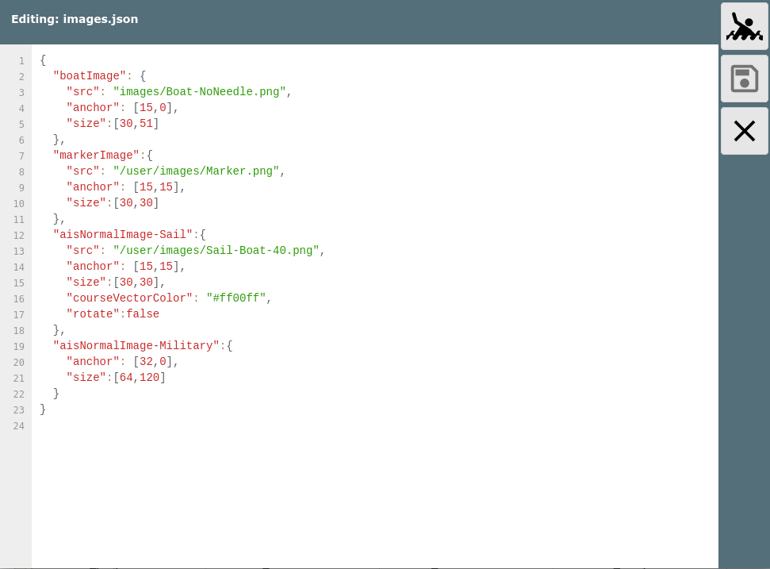

Seit Version 20201030.
Eine Reihe der in AvNav genutzten Symbole kann man an die eigenen Bedürfnisse anpassen. Man kann die vorhanden Symbole in ihrer Größe ändern, verschiedene Eigenschaften einstellen, oder sie durch eigene Symbole ersetzen.
Falls man eigene Symbole nutzen möchte, müssen diese als .png Dateien in das Images Verzeichnis hochgeladen werden - siehe bei der Beschreibung zu Nutzer-Dateien.
Welche Symbole verändert werden sollen (und wie), wird in einer JSON Datei im Nutzer Verzeichnis beschrieben - images.json.
Diese Datei hat den folgenden Aufbau (Beispiel):
Für jedes zu ersetzende Symbol muss ein Eintrag mit dem entsprechenden Namen existieren.
| boatImage | Das Symbol für das Boot auf der Navigationsseite |
| markerImage | Das Symbol für den aktuellen Ziel-Wegepunkt |
| aisNormalImage | Das Symbol für ein AIS Ziel, das nicht das nächste oder eines mit Warnung ist |
| aisNearestImage | Das Symbol für das nächste AIS Ziel |
| aisWarningImage | Das Symbol für ein AIS Ziel mit einer Näherungs-Warnung |
Bei den AisImages kann mit -shiptype noch ausgewählt, für welchen der verschiedenen angezeigten Typen dieses Image gelten soll. Falls für einen Type kein spezifisches Image definiert wurde, wird das jeweilige Basis-Image (also ohne -shiptype) bzw. das eingebaute Image genutzt.
Die folgende werte werden für shiptype unterstützt:
Für die AisImages müssen jeweils alle 3 Varianten (also Normal, Nearest, Warning) definiert werden, sonst ändert sich das Symbol je nach Zustand.
Die folgenden Parameter können für jedes Symbol definiert werden:
| src | Die URL für die Image Datei. Typisch /user/images/XYZ.png für eine
Datei, die über die Download Seite hochgeladen wurde. Falls dieser Parameter nicht angegeben wird, wird das in AvNav vorhandene Symbol genutzt - man kann aber z.B. mit den anderen Parametern die Größe ändern. Die Bilddateien sollten ein wenig grösser sein, als das was man bei size angibt - z.B. Faktor 2 (aber nicht zu gross, da sonst die Performance leidet). Wenn man Vektorgrafiken hat, kann man z.B. inkscape nutzen, um daraus png's zu erzeugen |
|
| size | [breite,höhe] - muss als Array (siehe Beispiel) angegeben werden.
Das beschreibt die Größe des Symbols (die Bilddatei wird auf diese
Größe skaliert). Falls man keinen src Parameter angibt, kann man hiermit die Größe des internen Symbols verändern. |
|
| anchor | [x,y] - der Punkt des Symbols (bezogen auf Breite und Höhe), der auf die aktuelle Position auf der Karte gesetzt werden soll. | |
| rotate | true oder false - wenn auf false gesetzt, wird das Symbol nicht entsprechend des aktuellen Kurses rotiert | nicht für markerImage |
| courseVector | true oder false - wenn auf false, wird für dieses Symbol kein Voraus-Vektor gezeichnet (auch wenn es über die Einstellungen aktiv ist) | nicht für markerImage |
| courseVectorColor | die Farbe für den course Vektor. Hier kann man eine Farbe wählen, die zu den genutzten Bildern passt. | nicht für markerImage |
Bei der Bearbeitung der images.json muss darauf geachtet werden, valides
json zu erzeugen. Wenn man es innerhalb von AvNav auf der Files/Download
Seite  (Unterseite
(Unterseite
 )
bearbeitet, wird beim Speichern automatisch eine Syntax-Prüfung
vorgenommen.
)
bearbeitet, wird beim Speichern automatisch eine Syntax-Prüfung
vorgenommen.

Nach der Änderung von images.json muss AvNav neu geladen werden.